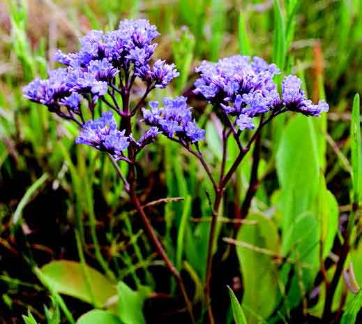
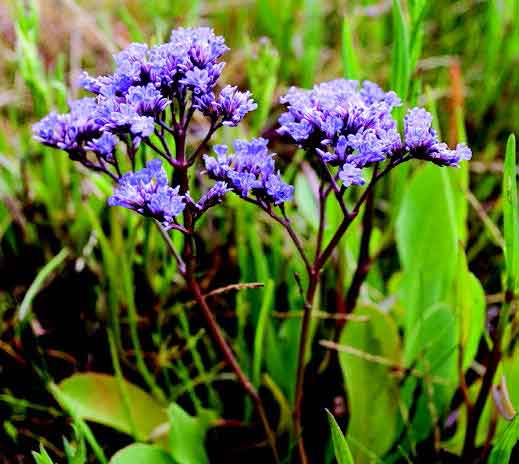

Vidste du, at Mulbjerge engang var en ø langt ude i Kattegat?
At området i dag byder på sjældne planter - og mange
forskellige arter af fugle? At her solgtes sild til kongen?
Følg den foreslåede tur rundt, få svarene og meget mere
at vide. På turen er der fortællinger på hver af de 6 stop. Se
ruten på kortet.


Mulbjerge er en langstrakt morænebakke og en del af et større fredet naturområde bestående af kystforlandet mod Kattegat og ”bjergene”, i alt 146 ha. Under isens tilbagetrækning blev smeltevandssand og -grus skubbet op og dannede de massive bakker. Samtidig blev undergrundens kalk flere steder presset med.
Arealerne med den kalkholdige jordbund fremstår i dag som unikke overdrev med noget af Danmarks mest artsrige planteog insektliv. I alt er ca. 87 ha af fredningen vild natur. De resterende 59 ha er marker og plantage. Mulbjerge, Dokkedal og Stejlgabet er en del af et større fredet Natura 2000 område. Byen Dokkedal og slugten Stejlgabet er dog ikke fredet.

Beliggende blot 12 km syd for Aalborg er naturområdet omkring Poulstrup Sø et ideelt udflugtsmål. Området kan nås fra øst via Visse eller Nøvling. Kommer du fra vest køres via Poulstrup eller Ferslev.


Park & Natur har markeret tre vandreruter i området. Herudover er der anlagt en markeret ridesti. Turene er afmærket med sorte pæle med farvecirkler for hver enkelt turrute, og ridestien er markeret med ridepiktogrammer. Der er gode opholdsmuligheder ved søerne, men det er tilladt at slå sig ned over alt i naturområdet. Ved færdsel i de indhegnede områder skal der udvises hensyn til de græssende dyr. Du må gerne samle svampe, bær og blomster til eget forbrug
De fleste mennesker besøger naturområdet for at opleve fred og ro. Benyt derfor venligst de anviste parkeringspladser og undgå unødig gennemkørsel. Det er tilladt at færdes til fods over alt på Aalborg Kommunes arealer (se områdegrænse på kortet). Cykling er kun tilladt på befæstede stier og skovveje. Al færdsel og ophold sker på eget ansvar og under størst mulig hensyntagen til andre naturgæster. Overnatning samt båltænding er ikke tilladt.
Hunde skal altid føres i snor i naturen. Vær særlig opmærksom på at din hund ikke springer op og skræmmer naturgæster på hesteryg. I hundeskoven må hunde under kontrol løbe frit.


Det tager kun få minutter at blive sejlet med færgen til Egholm fra færgelejet i Aalborg Vest. Færgen anløber Egholm tæt ved Kronborg Skov, restaurant Kronborg og et større opholdsareal med borde, bænke, bålplads og madpakkehus. Her findes også en primitiv lejrplads, der er velegnet for sejlende i kajak.
Egholm er dannet af hævet stenalderhavbund og omfatter et areal på 605 ha med højeste naturlige punkt
bare 1,5 meter over fjordens daglige vande.
Omkring år 1909 blev de første beskyttende diger
derfor bygget, og efterhånden er det meste af øen
inddæmmet. Seneste betydelige stormflod på Egholm var ved orkanen i januar 2005. Stormflodens
højeste vandstand er markeret med en stormflodspæl (se kort).
Selvom langt størstedelen af Egholms areal er opdyrket som agerland, så findes der en særdeles spændende, naturlig plante- og dyreverden på øens
strandenge, på de udyrkede arealer, i øens skove og
langs markvejene
Både forår og efterår kan der på Egholms lavvandede
grunde opleves store forekomster af mange spændende trækfugle, bl.a. lysbugede knortegæs, sangsvaner, pibeænder, hvinænder, skalleslugere, skarver
og skestorke. Ligeledes kan store flokke af hjejler, viber og stære opleves på træk i de samme perioder.
I Egholm By og på flere af øens gårde er der de seneste
år registreret sjældne slørugler. Også flere mosehornugler på vintertræk fra Nordskandinavien foretrækker Egholm som jagt- og opholdsområde. Uglerne nyder godt
af øens bestande af markmus, spidsmus og mosegrise.
I Nørredyb og ved Statsbroen kan der ofte iagttages
spættede sæler på jagt efter småfisk. Specielt i sommerhalvåret myldrer det i Limfjordens ålegræs, lige under
overfladen med store mængder af fiskeyngel og krebsdyr. På det lave vand i bugten ved Kronborg kan der med
rejestrygenet fanges roskilderejer, hesterejer, tanglopper, tanglus og strandkrabber.


På strandenge og langs øens mange grøfter og afvandingskanaler lever strandtudsen, som er en totalfredet
paddeart. I maj og juni kan strandtudsernes kvækken høres i skumringen. På Naturbasen ses feltregistreringer
anno 2020, der viser stor fremgang for arten på Egholm.
De seneste år er der etableret en fin bestand af råvildt
på Egholm med omkring 50-100 dyr. Fra diget ved Egholm Hage er der store chancer for at få græssende rådyr i kikkerten. Også ræv, hare, pindsvin, hermelin og sågar odder kan med lidt held opleves på øen.


Flere vilde planter på Egholm er så sjældne, at de er optaget på Danmarks nationale rødliste over sjældne og
udryddelsestruede planter. På Egholms udyrkede arealer findes over 20 kendte voksesteder for den sjældne, oprindelige danske rosenart langstilket filtrose (Rosa
tomentosa). Egholms filtrose er kun kendt fra ganske få
andre lokaliteter i Danmark.
Øens strandenge på nord- og sydkysten rummer flere botaniske seværdigheder og sjældne planter. Her vokser planter som lægekokleare, kveller, vingefrøet hindeknæ, strandtrehage, tætblomstret hindebæger, tangurt,
strandtusindgylden og den sjældne engklaseskærm.
 

Første skriftlige kilde om Egholm findes i Kong Valdemar Sejrs jordebog over Kronens gods fra 1231, hvor øen benævnes ”Æggiæholm, et hus”. Æggiæholm kan sandsynligt henføres til, at lokalbefolkningen i middelalderen indsamlede store mængder af æg - især mågeæg. ”Et hus” kan tolkes som kongens jagthytte og at kongen benyttede Egholm til jagt, når han gæstede Nordjylland.
Op gennem middelalderen havde Egholm flere forskellige skiftende ejere - både konger, herremænd og
Vor Frue Kloster i Aalborg. De første fastboende etablerede sig på øen omkring år 1500.
Flere af Egholms ældste gårde eksisterer stadig og findes på deres oprindelige plads, bl.a. Damgård i Egholm
By, hvor der er rejst en varde, bygget efter færøske traditioner over slægten med efternavnet ”Egholm”.
I årene 1809-10 købte egholmerne jorden til selveje.
Jorden blev fordelt på 6 næsten lige store gårde. I perioden 1818-28 skete yderligere en udstykning til 20
landbrug. I dag er antallet reduceret til 11 landbrug. På
slægtsgården Nørkærlund er der rejst en mindesten
over tidligere og nuværende ejere (se kort). Egholm har
i dag ca. 50 faste beboere.
Den første motordrevne postbåd kom til øen i 1914, og Statsbroen ved Nørredyb blev bygget i 1918, til dels finansieret af statsmidler. En fast færgeforbindelse til Aalborg blev etableret i 1972. I 2014 blev en ny og større færge indsat til at fragte de årligt over 60.000 passagerer til og fra øen. Øen havde tidligere eget mejeri, skole, smedje og telefoncentral. Skolen fungerer i dag som lejrskole.


Østerådalen Syd strækker sig fra Indkildevej i nord og syd på til Dall Møllevej mellem Svenstrup og Ellidshøj. Der er flere indgange til dalen, bl. a kan du benytte p-pladser på Dallvej og ved Skudshalevej.


Til fods og på cykel: Østerådalstien er en gennemgående cykel-og gangsti fra Dall Møllevej i Svenstrup til Aalborg Centrum via Østerådalen Nord. En del af Østerådalstien har sammenfald med Hærvejen - en national og international cykelrute. Østerådalstien gennem Østerådalen Syd er ca. 6½ km lang. Flere steder er der
etableret trampestier, hvor du kan færdes til fods rundt i
området. Fra Dall Møllevej ved Svenstrup er der forbindelse
til Guldbækstien - en 5 km lang trampesti langs Guldbækken til Godthåb.
Ridning: Det er tilladt at ride på det afmærkede ridespor
ved Finstrupgård Ridecenter.
Kanosejlads: Du må gerne sejle i kano på Østerå. Benyt Pog kanoplads ved Dallvej.
Lystfiskeri: To steder langs Østeråen har kommunen udpeget frie fiskepladser (se oversigtskortet). Her må du fiske
frit, det kræver blot gyldigt fisketegn, hvis du er mellem 18
og 65 år.
Østerådalen Syd har via Østerådalstien forbindelse til Østerådalen Nord, hvor kommunen har anlagt flere afmærkede
vandreruter, der alle giver mulighed for fine naturoplevelser.
Lavvandede søer og en større nedlagt lergrav er vigtige rastepladser for mange trækfugle.
Infohuset er beliggende i Østerådalen Nord med indkørsel
fra Over Kæret i Aalborg. Hele året kan du her opleve husets
udendørs plancheudstilling og få inspiration til ture på egen
hånd i Østerådalen.
Husk, at hunde altid skal føres i snor overalt i naturen.
I Østerådalen Nord findes en hundeskov, hvor hunde
kan løbe frit.
Smid ikke dit affald i naturen.
Brug de opstillede affaldsbeholdere, eller tag affaldet
med dig

Selv om du færdes i et område med offentlig adgang, skal du være opmærksom på, at en stor del af arealerne er privatejet og anvendes til landbrugsmæssige formål. Der henstilles derfor til, at du kun færdes på Østerådalstien og de anlagte trampestier - også af hensyn til områdets rige dyreog planteliv. Al færdsel i området sker på eget ansvar. Flere steder går trampestierne gennem indhegninger. Der er passage via stenter og låger. Vis hensyn til de græssende dyr ved at holde afstand og jag ikke med dem. Vær opmærksom på, at der mellem kreaturerne kan være både tyre og moderdyr, der beskytter deres kalve. Husk, at hunde altid skal føres i snor overalt i naturen. I Østerådalen Nord findes en hundeskov, hvor hunde kan løbe frit. Smid ikke dit affald i naturen. Brug de opstillede affaldsbeholdere, eller tag affaldet med dig
Østerådalen blev dannet under og efter den sidste istid
for mellem 22.000 og 10.000 år siden. Et mildere klima fik
vældige smeltevandsmasser til at strømme mod sydvest
under en 1 - 2 kilometer tyk iskappe og skabte derved en
kilometerbred tunneldal. Isens afsmeltning fik havet til at
stige, indtil det for omkring 5.000 år siden nåede sin største udstrækning.
Østerådalen var en del af stenalderhavet, og bakkerne ved
henholdsvis Hasseris mod vest og Gug mod øst lå som to
store øer. Dynd og ler, der blev bundfældet i havet, udjævnede med tiden det kuperede undersøiske landskab. Siden
skabte landhævningen de vidtstrakte engarealer, der lå urørte hen frem til slutningen af 1800-tallet.
Ådalen gennemskæres af Østerå, et 15 km langt vandløb,
der udspringer nordøst for Støvring og munder ud i Limfjorden. Åen har bl. a. tilløb fra Guldbæk nord for Svenstrup

Fra ældre stenalder for ca. 6.000 år siden var der i Østerådalen en omfattende menneskelig aktivitet. På Finstrupgårdøen og Svenstrup Holm findes rester af stenalderbopladser. Ved Finstrupgård lå i middelalderen et vigtigt
overfartssted.
I slutningen af 1800-tallet blev åen, som så mange andre
steder i Danmark, rettet ud. De fugtige områder blev drænet og omdannet til landbrugsland.
I dag drives der landbrug i hovedparten af Østerådalen
Syd. Mod nordvest og sydøst ses nogle relativt store landEkstensivt drevne fritidslandbrug, primært med afgræsning
og høslæt præger den sydlige del af Østerådalen
brug, der drives på traditionel vis med markafgrøder eller
malkekvæg. I den centrale og sydvestlige del af området ses
en del ekstensivt drevne fritidslandbrug primært med afgræsnig og høslet.
Som et markant indslag i naturen, i den sydlige del af Østerådalen, slynger åen sig gennem en mosaik af fugtige engområder. Netop de våde enge lokker mange fugle til området –
både ynglefugle samt træk- og vintergæster.
I vinterhalvåret gæstes området af forskellige rovfugle. Mest
markant er musvågen, der ofte ses sidde på en pæl, mens den
spejder efter markmus og mosegrise. Ved åen kan du opleve
vandstæren, vores eneste dykkende spurvefugl, og er du meget heldig, kan du få et hurtigt glimt af den sky isfugl. Når foråret sætter ind, flyver viberne deres karakteristiske territorieflugt ude over engene. Fra de lave buske eller fra toppen af en
hegnspæl lyder kornværlingens knirkende sang.
Der lever i dag en fast bestand af oddere i Østerådalen. Odderen er nataktiv og sky, så chancen for at opleve den er ikke stor.
Til gengæld er chancerne gode for at se ræv, rådyr eller hare.
Vibe Vandnymfer
Ved søer og vandhuller ses sommeren igennem et myldrende insektliv. De store guldsmede jager mindre insekter over
vandspejlet, som afpatruljeres af opmærksomme skøjteløbere,
der også angriber ethvert bytte af passende størrelse. Mange
fugle bruger Østerådalen som trækrute, både forår og efterår,
på turen mellem de nordlige ynglepladser og vinterkvartererne
under varmere himmelstrøg.
I området findes store østersbanker fra stenalderhavet, aflejret
for 4-5.000 år siden. De kan opleves i den nordlige brink ved
Østre Landgrøfts begyndelse.


På engene vest for Dall Villaby findes en stor bestand af den smukke orkidé - kødfarvet gøgeurt. Ved Finstrupgård Kildevæld findes et helt specielt planteliv, der er knyttet til kildens naturforhold, bl.a. vandkarse, hvor bladene kan benyttes som spiselig krydderurt. Gul følfod er blandt de allertidligste forårsblomster i Østerådalen. Derefter følger et væld af andre forårsblomster fx vorterod, mælkebøtte og løgkarse. I de sumpede områder langs åen kan du opleve gul iris, engkarse, og lysesiv. Alm. hyld vokser overalt i ådalen og kendes på de velduftende blomsterskærme i forsommeren og de spiselige, vitaminrige bær om efteråret.


Efter et vellykket naturgenopretningsprojekt i Østerådalen
Nord, blev der i 1995 taget initiativ til at fortsætte naturgenopretningen mod syd.
I dag fremstår hele Østerådalen som en vigtig grøn forbindelse, der strækker sig fra agerlandet i syd ind mod Aalborg
Centrum. De overordnede landskabstræk er fremhævet, og
der er etableret og genoprettet forskellige naturtyper. Publikums adgang til området har været højt prioriteret og er senest forbedret i 2011 med etablering af nye trampestier.
Ved at genslynge åen, er nogle af åløbets oprindelige kvaliteter genskabt. Udover de åbenlyse fordele for dyr og planter reducerer de våde engarealer udvaskningen af kvælstof
til Limfjorden.
Naturgenopretningsprojekterne i Østerådalen Nord og Syd
blev støttet af Naturstyrelsen, det daværende Nordjyllands
Amt og Aalborg Kommune i samarbejde med Friluftsrådet
og Danmarks Naturfredningsforening.